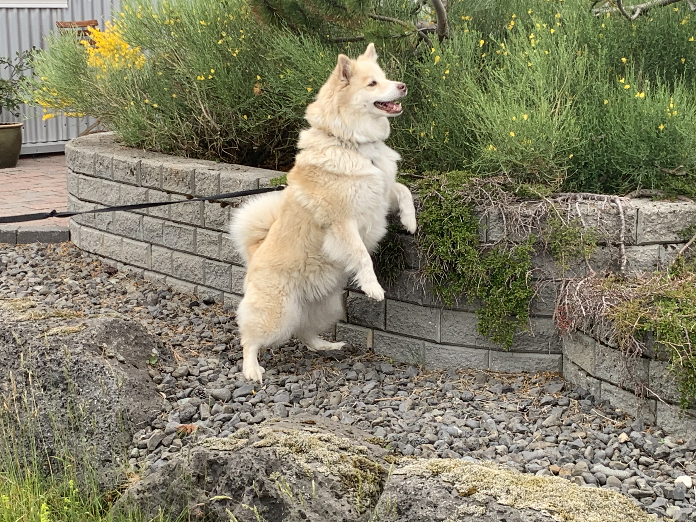
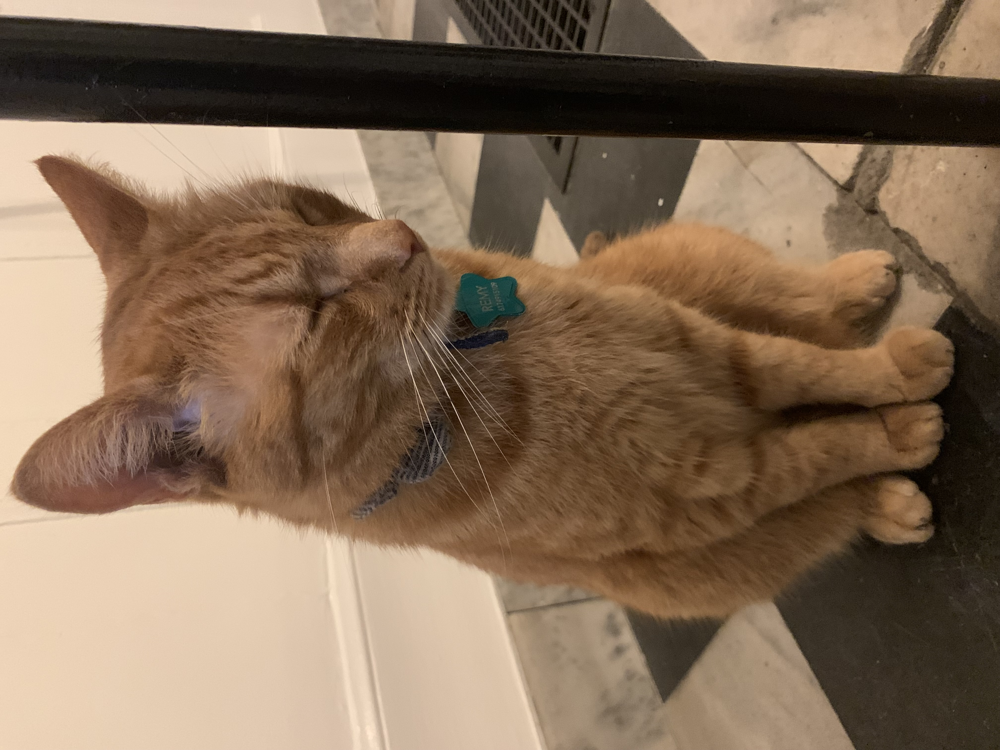
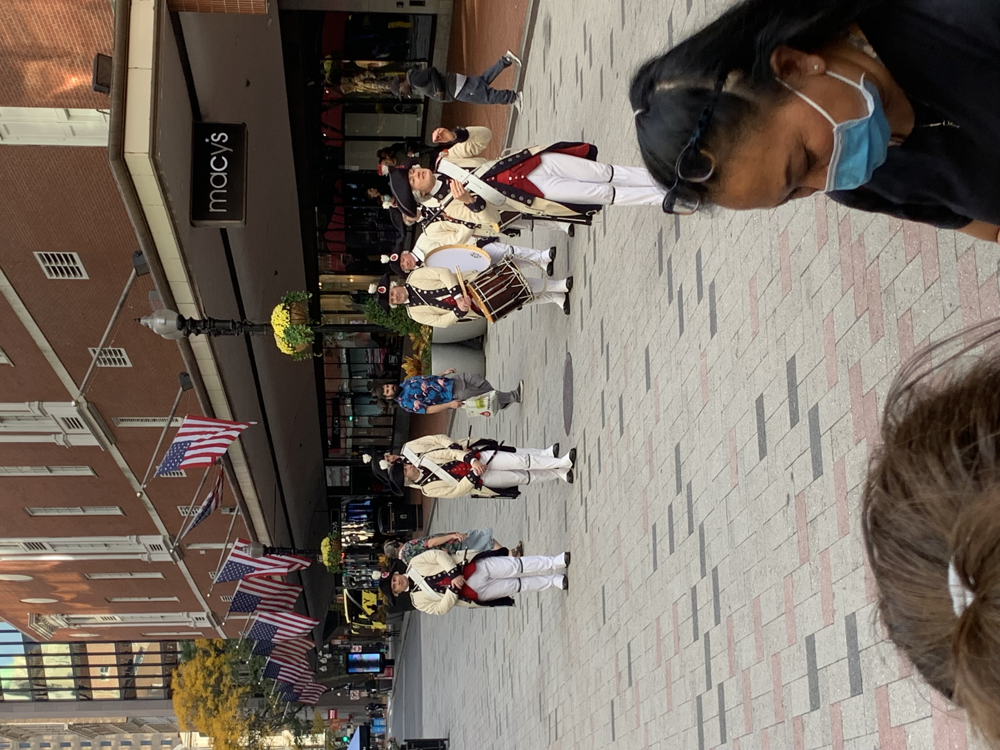

My camera roll has many random photos. From accidental screenshots of my home or lock screen to accidental pictures my phone takes in my pocket (yes it's all fuzzy blackness), the majority of these photos are not worth any viewing time. Yet there are a few cherished ones: From a sleepy Remy to a excited doggo to a historical reenactment of some kind, enjoy!
- Floof
- Sleepy Remy
- Historical
Floof
Native to Iceland, the Icelandic sheep dogs are just so fluffy!!!

Sleepy Remy
The kitty we all know and love, perhaps Remy got a little tired from PSetting
as well.

Historical Reenactment
Within the heart of Boston lies a fantastical historical play with a very
informative story!
